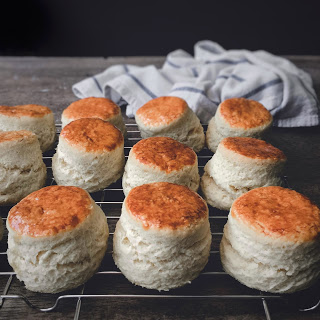

Random Recipe Generator
Below is a randomly-generated recipe!
Oven-Steamed Double Cream
You will need:
- 7 tbsp of whipped cream
- 646ml of double cream
- 2 oysters
Instructions:
- Preheat the oven to 200°C
- Whisk the whipped cream
- Chill the double cream
- Score the oysters
- Blanch the oysters
- Shake the whipped cream
- Wash the oysters
- Put the whipped cream in the saucepan
- Prepare the oysters
- Ride off into the sunset
